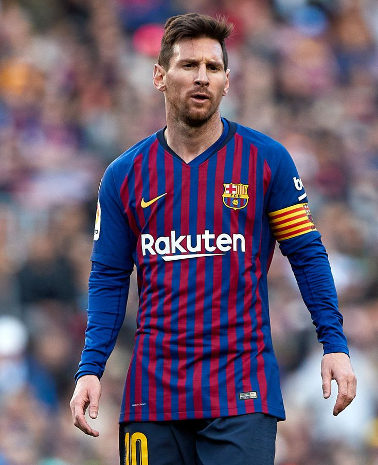

Afsonaviy O'yinchilar
Barcelona tarixida o'chmas iz qoldirgan o'yinchilar ro'yxati ulkan. Mana eng muhimlari (batafsil ma'lumot uchun ismlarni bosing):
- Lionel Messi
Lionel Messi - Karyera
Tug'ilgan: 24-iyun, 1987, Rosario, Argentina
Barcelona (2004-2021): 672 gol, 303 assist, 778 o'yin. 10 La Liga, 4 UEFA Champions League, 7 Copa del Rey, 8 Ballon d'Or (2009-2012, 2015, 2019, 2021).
PSG (2021-2023): 32 gol, 35 assist, 75 o'yin. 2 Ligue 1 chempionligi.
Inter Miami (2023-hozir): 44 gol, 22 assist, 49 o'yin. Leagues Cup 2023.
Argentina Milliy jamoasi: 2005-yildan. 109 gol, 2021 Copa América, 2022 FIFA World Cup g'olibi.
Stil: Ajoyib dribling, o'yin ko'rish qobiliyati, aniq paslar va gol urish mahorati.
 - Johan Cruyff
Johan Cruyff - Karyera
Tug'ilgan: 25-aprel, 1947, Amsterdam, Niderlandiya
Barcelona (1973-1978): 48 gol, 143 o'yin. 1 La Liga (1974). Murabbiy sifatida 4 La Liga, 1 UEFA Champions League (1992).
Ajax (1964-1973, 1981-1983): 190 gol, 3 UEFA European Cup.
Niderlandiya Milliy jamoasi: 33 gol, 1974 World Cup finalisti.
Stil: "Total Football" asoschisi, ajoyib texnika va liderlik.
- László Kubala
László Kubala - Karyera
Tug'ilgan: 10-iyun, 1927, Budapesht, Vengriya
Barcelona (1950-1961): 196 gol, 256 o'yin. 4 La Liga, 2 Copa del Rey.
Milliy jamoalar: Vengriya, Chexoslovakiya va Ispaniya uchun o'ynagan.
Stil: Kuchli zarba, dribling va ko'p yo'nalishli hujumchi.
- Ronaldinho
Ronaldinho - Karyera
Tug'ilgan: 21-mart, 1980, Porto Alegre, Braziliya
Barcelona (2003-2008): 94 gol, 145 assist, 207 o'yin. 2 La Liga, 1 UEFA Champions League (2006), 2005 Ballon d'Or.
PSG, Milan, va boshqalar: 2001-2015 yillarda turli klublarda muvaffaqiyat.
Braziliya Milliy jamoasi: 33 gol, 2002 World Cup g'olibi.
Stil: Sehrli dribling, ijodkorlik va quvonchli o'yin.
- Xavi Hernández
Xavi Hernández - Karyera
Tug'ilgan: 25-yanvar, 1980, Terrassa, Ispaniya
Barcelona (1998-2015): 85 gol, 185 assist, 767 o'yin. 8 La Liga, 4 UEFA Champions League.
Al-Sadd (2015-2019): Qatar chempionliklari.
Ispaniya Milliy jamoasi: 2000-2014, 12 gol, 2 UEFA Euro, 2010 World Cup.
Stil: O'yin boshqaruvchisi, aniq paslar va taktika.
- Andrés Iniesta
Andrés Iniesta - Karyera
Tug'ilgan: 11-may, 1984, Fuentealbilla, Ispaniya
Barcelona (2002-2018): 57 gol, 139 assist, 674 o'yin. 9 La Liga, 4 UEFA Champions League.
Vissel Kobe (2018-2023): Yaponiya ligasi chempioni.
Ispaniya Milliy jamoasi: 13 gol, 2010 World Cup final goli, 2 UEFA Euro.
Stil: Yumshoq dribling, o'yin ko'rish va muvozanat.
- Carles Puyol
Carles Puyol - Karyera
Tug'ilgan: 13-aprel, 1978, La Pobla de Segur, Ispaniya
Barcelona (1999-2014): 18 gol, 593 o'yin. 6 La Liga, 3 UEFA Champions League.
Ispaniya Milliy jamoasi: 3 gol, 2010 World Cup, 2008 UEFA Euro.
Stil: Qattiq mudofaa, liderlik va fidoiylik.
- Rivaldo
Rivaldo - Karyera
Tug'ilgan: 19-aprel, 1972, Recife, Braziliya
Barcelona (1997-2002): 130 gol, 235 o'yin. 2 La Liga, 1999 Ballon d'Or.
Milan, Olympiacos, va boshqalar: 2002-2015 yillarda muvaffaqiyat.
Braziliya Milliy jamoasi: 34 gol, 2002 World Cup g'olibi.
Stil: Kuchli zarba, texnika va ijodkorlik.
- Joan Gamper
Joan Gamper - Karyera
Tug'ilgan: 22-noyabr, 1877, Winterthur, Shveytsariya
Barcelona (1899-1903): Klub asoschisi, 120 gol, 51 o'yin.
Rollar: O'yinchi, prezident va klubning asosiy ilhomchisi.
Stil: Hujumdagi ijodkorlik va tashkilotchilik.
- Gerard Piqué
Gerard Piqué - Karyera
Tug'ilgan: 2-fevral, 1987, Barcelona, Ispaniya
Barcelona (2008-2022): 53 gol, 616 o'yin. 8 La Liga, 3 UEFA Champions League.
Manchester United (2004-2008): 2 gol, 23 o'yin.
Ispaniya Milliy jamoasi: 5 gol, 2010 World Cup, 2012 UEFA Euro.
Stil: Aqlli mudofaa, pas berish va liderlik.